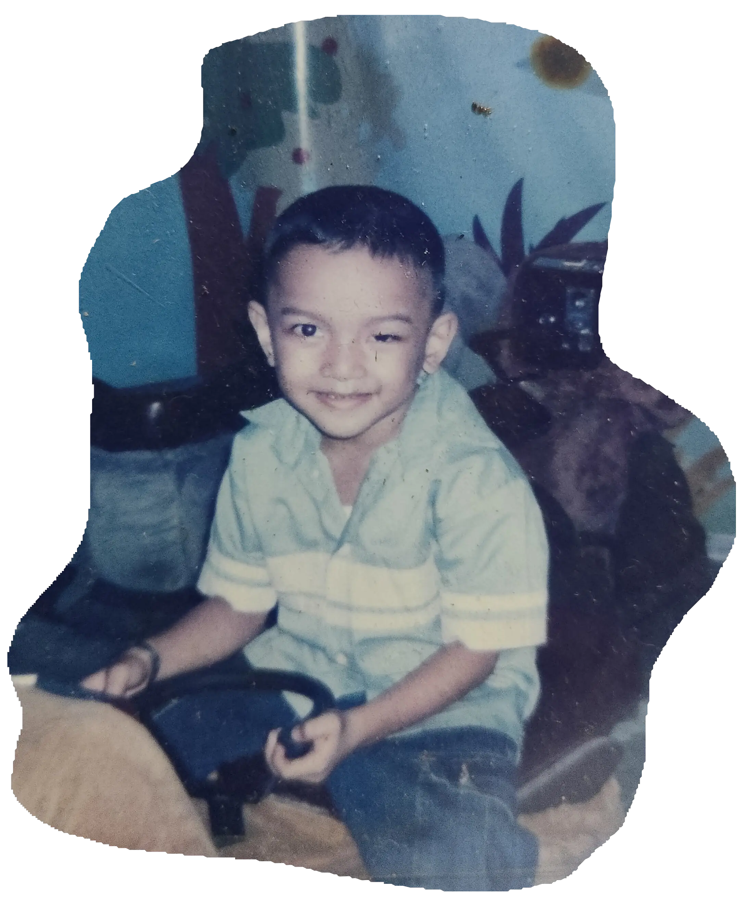
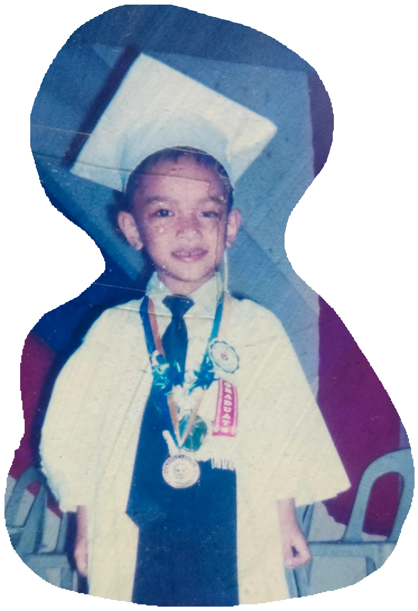
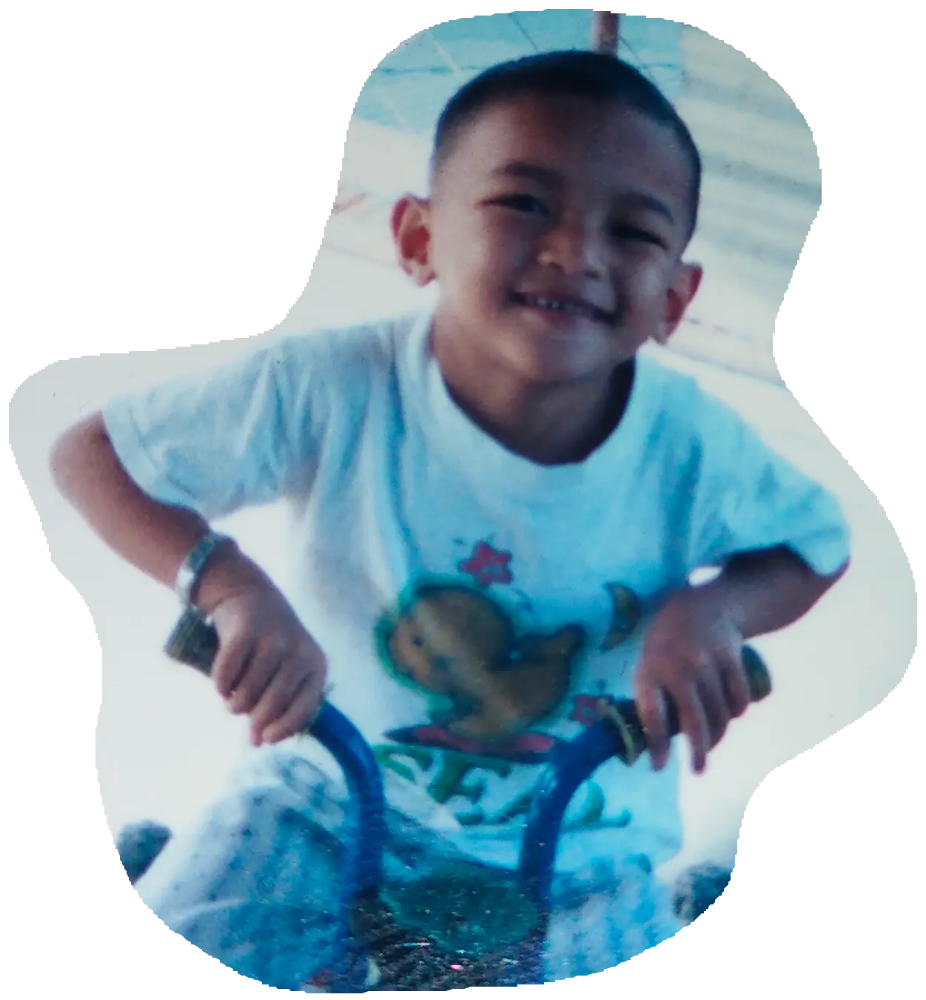
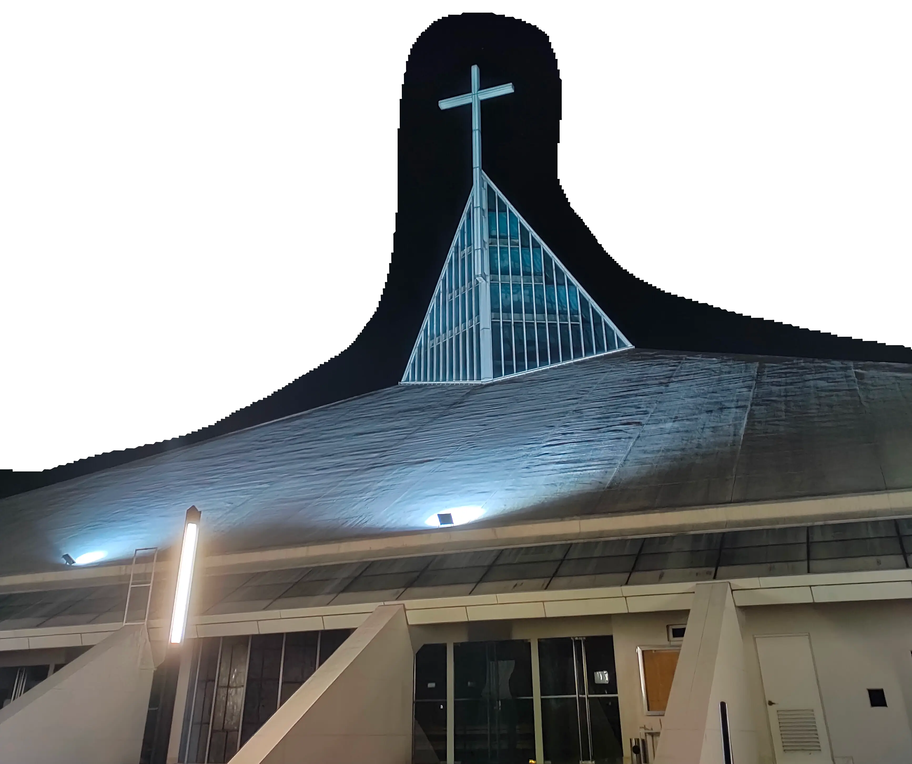
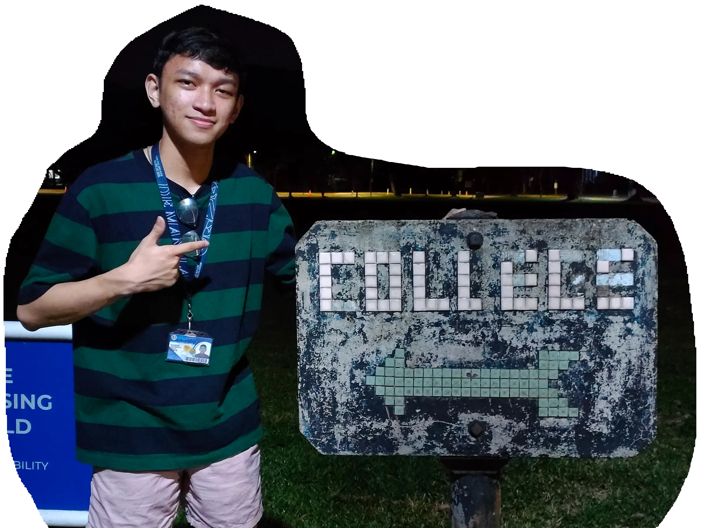

Hi! I'm Kian
son of a housewife and family driver from Mandaluyong


growing up, i was shy but ambitious
while not well-off financially, i was a happy kid

my dream was financial stability, and to someday buy a nice house for my parents. one with a lot of space where they can breathe in fresh air
i was always one of the smartest kids in elementary school
attending a science high school humbled me, and taught me that following the rules takes precedence over having fun
as a first generation college student, the opportunity to attend any college was a blessing in itself
but getting the chance to study at Ateneo was, for me, unimaginable

this July, I'll be graduating with a degree in Computer Science as Magna Cum Laude
potential could've only gotten me so far, the opportunity you provided was what got me here
you are the reason why this was all possible
while words alone aren't enough, this letter serves to express my heartfelt gratitude for the incredible opportunity you provided me and my family
this generosity has had, and will continue to have, a profound impact on my life
your act of kindness not only alleviated the financial burden of a college education, but also gave me the chance to pursue my dreams and aspirations without limitations

I was able to focus on my studies and personal growth during my time at Ateneo because of your belief in my potential
your kindess has not only opened doors for me career-wise, but has also broadened my horizons and expanded my perspective on the world
I have also been blessed to participate in transformative experiences and build lifelong friendships that have enriched my life immeasurably thanks to you
your faith in my abilities has empowered me to push beyond my limits, take on new challenges, and pursue excellence in all that I do
you have fueled my determination to succeed, and have instilled in me a sense of responsibility to give back and make a positive difference in the world
as I prepare to go down from the hill, armed with knowledge, skills, and a profound sense of gratitude, I will have you in mind
I am hopeful and enthusiastic for the future, and I am eager to make the most of the opportunities that lie ahead. all thanks to you
with this education that you have helped provide me with, I am committed to contribute to society through being a person for others, just as you have been to me
I will forever carry your kindness and guidance with me, and I am determined to honor your generosity by striving for excellence, making a meaningful impact, and being an inspiration